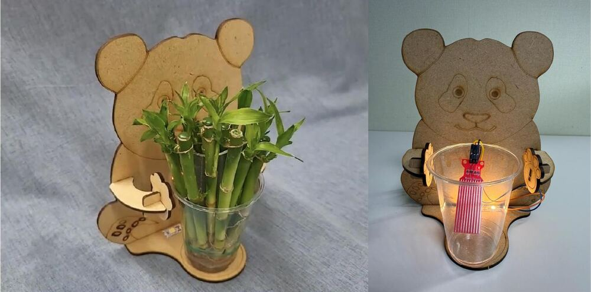
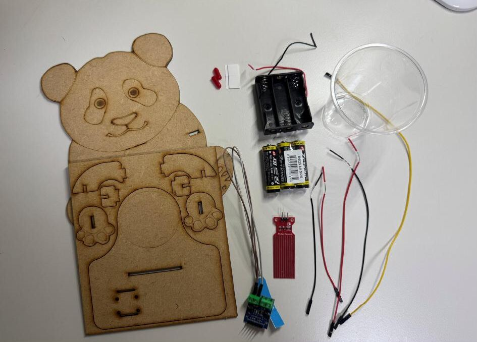
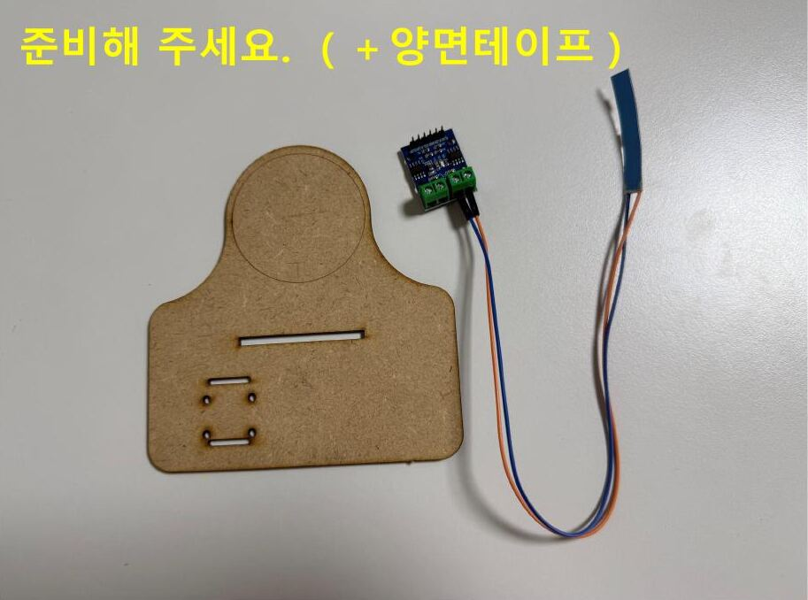

<title>품바오 스마트팜 실습실</title>
<meta name="claude:viewport-fit-sides" content="cover">
<link rel="preconnect" href="https://fonts.googleapis.com">
<link rel="preconnect" href="https://fonts.gstatic.com" crossorigin>
<link rel="stylesheet" href="https://fonts.googleapis.com/css2?family=Jua&family=IBM+Plex+Sans+KR:wght@400;500;700&family=IBM+Plex+Mono:wght@500&display=swap">
<style>
/* Layout: 하나의 긴 실습 노트 — 상단 고정 목차, 다섯 개의 수업 구역(개념 → 직업 → 조립 → 실험 → 퀴즈) */
:root {
  --bg: #f5f6ef;
  --surface: #ffffff;
  --sunk: #ebede3;
  --fg: #22302a;
  --muted: #5d6b63;
  --line: #d6dacb;
  --leaf: #3f7d4e;
  --leaf-soft: #dcebdc;
  --water: #2f78b8;
  --water-soft: #d6e6f4;
  --led: #f2ae2e;
  --led-glow: rgba(242, 174, 46, .55);
  --wood: #c8a273;
  --wood-dark: #8a6a43;
  --rose: #e8d9d6;
  --bad: #b8433a;
  --bad-soft: #f6dcd8;
  --good: #2f7a45;
  --good-soft: #d8eedc;
  --wire-red: #d22f2f;
  --wire-black: #262626;
  --wire-yellow: #e6b400;
  --panda: #fbfaf6;
  --panda-dark: #2b2b2b;
  --f-display: "Jua", "IBM Plex Sans KR", system-ui, sans-serif;
  --f-body: "IBM Plex Sans KR", "Apple SD Gothic Neo", "Malgun Gothic", system-ui, sans-serif;
  --f-mono: "IBM Plex Mono", ui-monospace, Menlo, monospace;
}
@media (prefers-color-scheme: dark) {
  :root:not([data-theme="light"]) {
    --bg: #161c18; --surface: #1f2722; --sunk: #141915; --fg: #e8ede6; --muted: #a3b0a7; --line: #34403a;
    --leaf: #7cc08c; --leaf-soft: #23382a; --water: #6eaee6; --water-soft: #1c3045;
    --led: #ffc24d; --led-glow: rgba(255, 194, 77, .5); --wood: #b38f62; --wood-dark: #d6b88f; --rose: #3a2f2d;
    --bad: #f08a80; --bad-soft: #3d2420; --good: #7cd394; --good-soft: #1f3a27;
    --wire-red: #ff5a5a; --wire-black: #9a9a9a; --wire-yellow: #ffd23f; --panda: #e9e6dd; --panda-dark: #111;
    color-scheme: dark;
  }
}
:root[data-theme="dark"] {
  --bg: #161c18; --surface: #1f2722; --sunk: #141915; --fg: #e8ede6; --muted: #a3b0a7; --line: #34403a;
  --leaf: #7cc08c; --leaf-soft: #23382a; --water: #6eaee6; --water-soft: #1c3045;
  --led: #ffc24d; --led-glow: rgba(255, 194, 77, .5); --wood: #b38f62; --wood-dark: #d6b88f; --rose: #3a2f2d;
  --bad: #f08a80; --bad-soft: #3d2420; --good: #7cd394; --good-soft: #1f3a27;
  --wire-red: #ff5a5a; --wire-black: #9a9a9a; --wire-yellow: #ffd23f; --panda: #e9e6dd; --panda-dark: #111;
  color-scheme: dark;
}

* { box-sizing: border-box; }
body {
  background: var(--bg); color: var(--fg);
  font-family: var(--f-body); font-size: 17px; line-height: 1.65;
  word-break: keep-all; overflow-wrap: break-word;
}
body::before { content: ""; position: fixed; inset: 0 0 auto; height: env(safe-area-inset-top, 0px); z-index: 10; background: var(--surface); }
.wrap { max-width: 1040px; margin: 0 auto; padding-left: max(16px, env(safe-area-inset-left, 0px)); padding-right: max(16px, env(safe-area-inset-right, 0px)); }
h1, h2, h3 { font-family: var(--f-display); font-weight: 400; line-height: 1.25; text-wrap: balance; margin: 0; }
h2 { font-size: clamp(1.8rem, 4.5vw, 2.5rem); }
h3 { font-size: 1.35rem; }
p { margin: 0; }
button { font: inherit; cursor: pointer; }
:focus-visible { outline: 3px solid var(--water); outline-offset: 2px; border-radius: 6px; }

/* nav */
.topnav { position: sticky; top: env(safe-area-inset-top, 0px); z-index: 9; background: var(--surface); border-bottom: 1px solid var(--line); }
.topnav .wrap { display: flex; align-items: center; gap: 16px; padding-block: 10px; }
.brand { font-family: var(--f-display); font-size: 1.25rem; color: var(--leaf); white-space: nowrap; text-decoration: none; }
.navlinks { display: flex; gap: 4px; overflow-x: auto; scrollbar-width: none; min-width: 0; }
.navlinks::-webkit-scrollbar { display: none; }
.navlinks a { white-space: nowrap; color: var(--muted); text-decoration: none; padding: 6px 12px; border-radius: 999px; font-size: .92rem; font-weight: 500; }
.navlinks a:hover, .navlinks a.on { background: var(--leaf-soft); color: var(--leaf); }

/* hero */
.hero { padding-block: 44px 28px; display: grid; grid-template-columns: 1.15fr .85fr; gap: 32px; align-items: center; }
.hero h1 { font-size: clamp(2.3rem, 6vw, 3.6rem); }
.hero h1 em { font-style: normal; color: var(--leaf); }
.hero .lead { margin-top: 14px; color: var(--muted); font-size: 1.08rem; max-width: 34em; }
.hero-photo { border-radius: 18px; overflow: hidden; border: 1px solid var(--line); background: var(--sunk); }
.hero-photo img { display: block; width: 100%; height: auto; }
.rule-card { margin-top: 22px; display: grid; grid-template-columns: 1fr 1fr; gap: 10px; }
.rule { padding: 14px 16px; border-radius: 14px; background: var(--surface); border: 1px solid var(--line); }
.rule b { display: block; font-family: var(--f-display); font-weight: 400; font-size: 1.15rem; }
.rule.wet b { color: var(--water); }
.rule.dry b { color: var(--wood-dark); }
.rule span { color: var(--muted); font-size: .95rem; }

/* sections */
section.block { padding-block: 56px 24px; scroll-margin-top: 64px; }
.eyebrow { font-family: var(--f-mono); font-size: .8rem; letter-spacing: .08em; color: var(--leaf); text-transform: uppercase; margin-bottom: 6px; }
.sec-intro { color: var(--muted); margin-top: 10px; max-width: 40em; }
.sub { margin-top: 36px; }
.sub > h3 { margin-bottom: 14px; }

/* compare */
.compare { display: grid; grid-template-columns: 1fr 1fr; gap: 14px; margin-top: 24px; }
.cmp { padding: 20px; border-radius: 16px; border: 1px solid var(--line); background: var(--surface); }
.cmp h3 { margin-bottom: 10px; }
.cmp ul { margin: 0; padding-left: 1.1em; color: var(--muted); }
.cmp.now { background: var(--leaf-soft); border-color: transparent; }
.cmp.now h3 { color: var(--leaf); }
.definition { margin-top: 18px; padding: 22px; border-radius: 16px; background: var(--surface); border: 1px dashed var(--leaf); }
.definition .words { font-family: var(--f-display); font-size: 1.6rem; display: flex; flex-wrap: wrap; gap: 6px 18px; align-items: baseline; }
.definition .words small { font-family: var(--f-body); font-size: .9rem; color: var(--muted); }
.definition p { margin-top: 8px; }

.flipgrid { display: grid; grid-template-columns: repeat(4, 1fr); gap: 12px; }
.flip { position: relative; min-height: 168px; border: 1px solid var(--line); border-radius: 16px; background: var(--surface); padding: 18px; text-align: left; color: var(--fg); display: flex; flex-direction: column; gap: 8px; }
.flip .num { font-family: var(--f-mono); color: var(--leaf); font-size: .85rem; }
.flip .q { font-family: var(--f-display); font-size: 1.25rem; }
.flip .a { color: var(--muted); font-size: .95rem; }
.flip .hint { margin-top: auto; font-size: .82rem; color: var(--leaf); }
.flip[aria-pressed="true"] { background: var(--leaf-soft); border-color: transparent; }
.flip[aria-pressed="true"] .hint { display: none; }

/* jobs */
.chips { display: flex; flex-wrap: wrap; gap: 8px; }
.chip { border: 1px solid var(--line); background: var(--surface); color: var(--fg); border-radius: 999px; padding: 8px 16px; font-weight: 500; }
.chip[aria-pressed="true"] { background: var(--leaf); color: var(--surface); border-color: var(--leaf); }
.jobs { display: grid; grid-template-columns: repeat(auto-fill, minmax(230px, 1fr)); gap: 12px; margin-top: 16px; }
.job { padding: 18px; border-radius: 16px; background: var(--surface); border: 1px solid var(--line); display: flex; flex-direction: column; gap: 6px; transition: opacity .2s, transform .2s; }
.job .tag { font-size: .78rem; font-family: var(--f-mono); color: var(--muted); }
.job h4 { margin: 0; font-family: var(--f-display); font-weight: 400; font-size: 1.2rem; }
.job p { color: var(--muted); font-size: .95rem; }
.job.dim { opacity: .35; }
.job.hit { border-color: var(--leaf); box-shadow: 0 0 0 2px var(--leaf-soft); }
.major-box { margin-top: 16px; padding: 18px 20px; border-radius: 16px; background: var(--leaf-soft); }
.major-box b { color: var(--leaf); }
.glossary { margin-top: 14px; font-size: .92rem; color: var(--muted); display: grid; gap: 4px; }
.glossary b { color: var(--fg); }

/* parts */
.parts { display: grid; grid-template-columns: 1fr 1fr; gap: 20px; align-items: start; }
.parts figure { margin: 0; border-radius: 16px; overflow: hidden; border: 1px solid var(--line); }
.parts figure img { display: block; width: 100%; height: auto; }
.checklist { list-style: none; margin: 0; padding: 0; display: grid; gap: 6px; }
.checklist label { display: flex; gap: 12px; align-items: center; padding: 10px 14px; border-radius: 12px; background: var(--surface); border: 1px solid var(--line); cursor: pointer; }
.checklist input { width: 20px; height: 20px; accent-color: var(--leaf); flex: none; }
.checklist .qty { margin-left: auto; font-family: var(--f-mono); color: var(--muted); font-size: .85rem; }
.checklist input:checked + span { color: var(--muted); text-decoration: line-through; }
.count-note { margin-top: 10px; font-size: .92rem; color: var(--muted); }

/* stepper */
.stepper { margin-top: 18px; border-radius: 20px; background: var(--surface); border: 1px solid var(--line); overflow: hidden; }
.progress { height: 8px; background: var(--sunk); }
.progress i { display: block; height: 100%; width: 0; background: var(--leaf); transition: width .3s; }
.step-body { display: grid; grid-template-columns: 1.2fr 1fr; gap: 0; }
.step-img { background: var(--sunk); display: flex; align-items: center; justify-content: center; min-height: 300px; }
.step-img img { display: block; max-height: 460px; width: auto; max-width: 100%; }
.step-text { padding: 24px; display: flex; flex-direction: column; gap: 12px; min-width: 0; }
.step-no { font-family: var(--f-mono); color: var(--leaf); font-size: .85rem; }
.step-text h3 { font-size: 1.6rem; }
.step-text ul { margin: 0; padding-left: 1.1em; display: grid; gap: 4px; }
.tip { padding: 12px 14px; border-radius: 12px; background: var(--water-soft); font-size: .95rem; }
.tip b { color: var(--water); }
.warn { background: var(--bad-soft); }
.warn b { color: var(--bad); }
.step-nav { display: flex; gap: 8px; align-items: center; justify-content: space-between; padding: 14px 18px; border-top: 1px solid var(--line); flex-wrap: wrap; }
.btn { border: 1px solid var(--line); background: var(--surface); color: var(--fg); padding: 10px 18px; border-radius: 12px; font-weight: 500; }
.btn.primary { background: var(--leaf); color: var(--surface); border-color: var(--leaf); }
.btn.water { background: var(--water); color: var(--surface); border-color: var(--water); }
.btn:disabled { opacity: .4; cursor: default; }
.dots { display: flex; gap: 5px; flex-wrap: wrap; justify-content: center; flex: 1; min-width: 0; }
.dots button { width: 26px; height: 26px; border-radius: 50%; border: 1px solid var(--line); background: var(--surface); color: var(--muted); font-size: .72rem; font-family: var(--f-mono); padding: 0; }
.dots button.done { background: var(--leaf-soft); color: var(--leaf); border-color: transparent; }
.dots button.cur { background: var(--leaf); color: var(--surface); border-color: var(--leaf); }

/* simulator */
.lab { display: grid; grid-template-columns: 1fr 1fr; gap: 18px; margin-top: 20px; }
.panel { background: var(--surface); border: 1px solid var(--line); border-radius: 20px; padding: 20px; min-width: 0; }
.scene svg { display: block; width: 100%; height: auto; max-height: 440px; }
.controls { display: grid; gap: 14px; }
.slider-row label { display: flex; justify-content: space-between; font-weight: 500; }
.slider-row input[type=range] { width: 100%; accent-color: var(--water); }
.btn-row { display: flex; gap: 8px; flex-wrap: wrap; }
.readout { display: grid; grid-template-columns: repeat(3, 1fr); gap: 8px; }
.meter { padding: 12px; border-radius: 12px; background: var(--sunk); }
.meter span { display: block; font-size: .8rem; color: var(--muted); }
.meter b { font-family: var(--f-mono); font-size: 1.25rem; font-variant-numeric: tabular-nums; }
.flow { display: grid; grid-template-columns: 1fr auto 1fr auto 1fr; align-items: stretch; gap: 6px; }
.flow .box { padding: 10px 8px; border-radius: 12px; border: 2px solid var(--line); text-align: center; font-size: .88rem; transition: border-color .2s, background .2s; }
.flow .box b { display: block; font-family: var(--f-display); font-weight: 400; font-size: 1.05rem; }
.flow .arrow { align-self: center; color: var(--muted); }
.flow .box.act { border-color: var(--leaf); background: var(--leaf-soft); }
.flow .box.out.act { border-color: var(--led); background: color-mix(in srgb, var(--led) 18%, transparent); }
.chart-wrap svg { display: block; width: 100%; height: auto; }
.chart-cap { font-size: .85rem; color: var(--muted); }
.status-line { font-family: var(--f-display); font-size: 1.3rem; }
.status-line.dry { color: var(--wood-dark); }
.status-line.wet { color: var(--water); }

/* wiring */
.wiring { margin-top: 20px; }
.wire-pick { display: flex; gap: 8px; flex-wrap: wrap; align-items: center; }
.wire-btn { display: inline-flex; gap: 8px; align-items: center; border: 2px solid var(--line); background: var(--surface); color: var(--fg); padding: 8px 14px; border-radius: 12px; font-weight: 500; }
.wire-btn i { width: 26px; height: 6px; border-radius: 3px; display: inline-block; }
.wire-btn[aria-pressed="true"] { border-color: var(--fg); }
.board-row { display: grid; grid-template-columns: 1fr 1.6fr; gap: 16px; margin-top: 16px; }
.board { padding: 16px; border-radius: 16px; text-align: center; min-width: 0; }
.board.sensor { background: color-mix(in srgb, var(--wire-red) 16%, var(--surface)); }
.board.driver { background: color-mix(in srgb, var(--water) 16%, var(--surface)); }
.board h4 { margin: 0 0 10px; font-family: var(--f-display); font-weight: 400; font-size: 1.1rem; }
.pins { display: flex; justify-content: center; gap: 6px; flex-wrap: wrap; }
.pin { display: flex; flex-direction: column; align-items: center; gap: 6px; border: 0; background: none; padding: 4px; color: var(--fg); border-radius: 10px; }
.pin .cap { width: 34px; height: 46px; border-radius: 6px; background: var(--panda-dark); border: 3px solid var(--sunk); position: relative; }
.pin .cap::after { content: ""; position: absolute; left: 50%; top: 6px; width: 6px; height: 6px; margin-left: -3px; background: #bbb; border-radius: 1px; }
.pin .lab { font-family: var(--f-mono); font-size: .78rem; }
.pin.ok .lab { color: var(--good); font-weight: 700; }
.pin.no .lab { color: var(--bad); font-weight: 700; }
.pin.no .cap { outline: 3px solid var(--bad); }
.pin.ok .cap { outline: 3px solid var(--good); }
.wire-feedback { margin-top: 14px; padding: 12px 16px; border-radius: 12px; background: var(--sunk); }
.wire-feedback.good { background: var(--good-soft); color: var(--good); }
.wire-feedback.bad { background: var(--bad-soft); color: var(--bad); }
.bundle-note { margin-top: 14px; font-size: .95rem; color: var(--muted); }

/* quiz */
.quiz { display: grid; gap: 12px; margin-top: 18px; }
.qcard { background: var(--surface); border: 1px solid var(--line); border-radius: 16px; padding: 18px; }
.qcard .qt { font-weight: 700; margin-bottom: 10px; }
.qcard .qt span { font-family: var(--f-mono); color: var(--leaf); margin-right: 6px; }
.opts { display: grid; grid-template-columns: repeat(auto-fill, minmax(190px, 1fr)); gap: 8px; }
.opt { text-align: left; border: 1px solid var(--line); background: var(--bg); color: var(--fg); padding: 10px 14px; border-radius: 10px; }
.opt.right { background: var(--good-soft); border-color: var(--good); color: var(--good); font-weight: 700; }
.opt.wrong { background: var(--bad-soft); border-color: var(--bad); color: var(--bad); }
.qcard .explain { margin-top: 10px; font-size: .93rem; color: var(--muted); }
.score { margin-top: 18px; padding: 22px; border-radius: 18px; background: var(--leaf-soft); display: flex; gap: 16px; align-items: center; flex-wrap: wrap; justify-content: space-between; }
.score b { font-family: var(--f-display); font-weight: 400; font-size: 1.6rem; color: var(--leaf); }

footer { padding-block: 40px 56px; color: var(--muted); font-size: .9rem; }
footer .wrap { display: flex; flex-direction: column; gap: 6px; }

@media (max-width: 860px) {
  .hero, .parts, .lab, .step-body, .board-row { grid-template-columns: minmax(0, 1fr); }
  .hero > *, .parts > *, .lab > *, .step-body > *, .board-row > * { min-width: 0; }
  .step-nav { justify-content: center; }
  .dots { order: -1; flex-basis: 100%; }
  .flipgrid { grid-template-columns: 1fr 1fr; }
  .step-img { min-height: 220px; }
  .step-img img { max-height: 340px; }
}
@media (max-width: 520px) {
  body { font-size: 16px; }
  .compare, .rule-card, .flipgrid { grid-template-columns: minmax(0, 1fr); }
  .checklist label { flex-wrap: wrap; }
  .flip { min-height: 0; }
  .readout { grid-template-columns: 1fr 1fr; }
  .flow { grid-template-columns: 1fr; }
  .flow .arrow { transform: rotate(90deg); justify-self: center; }
  .pin .cap { width: 28px; height: 40px; }
}
@media (prefers-reduced-motion: reduce) {
  *, *::before, *::after { transition: none !important; animation: none !important; }
}
</style>

<nav class="topnav" aria-label="실습 목차">
  <div class="wrap">
    <a class="brand" href="#top">품바오 스마트팜</a>
    <div class="navlinks">
      <a href="#about">스마트팜이란?</a>
      <a href="#jobs">직업 탐색</a>
      <a href="#build">만들기</a>
      <a href="#lab">원리 실험실</a>
      <a href="#quiz">퀴즈</a>
    </div>
  </div>
</nav>

<main id="top">
  <header class="wrap hero">
    <div>
      <p class="eyebrow">데이터로 키우는 초록빛 미래</p>
      <h1>목마른 식물을<br><em>판다가 알려줘요</em></h1>
      <p class="lead">수위 센서가 컵 속의 물을 느끼고, 물이 떨어지면 판다 발밑의 LED가 켜집니다. 오늘은 이 작은 스마트팜을 직접 만들고, 어떻게 작동하는지 화면에서 실험해 봐요.</p>
      <div class="rule-card">
        <div class="rule wet"><b>물이 있으면</b><span>LED가 꺼져요. 지금은 괜찮아요.</span></div>
        <div class="rule dry"><b>물이 없으면</b><span>LED가 켜져요. "물 주세요!"</span></div>
      </div>
    </div>
    <figure class="hero-photo" style="margin:0">
      
    </figure>
  </header>

  <!-- 1. 스마트팜이란 -->
  <section class="block wrap" id="about">
    <p class="eyebrow">Ⅰ. 개념</p>
    <h2>스마트팜이란?</h2>
    <div class="compare">
      <div class="cmp">
        <h3>지금까지의 농업</h3>
        <ul>
          <li>좋은 날씨를 기다려야 해요</li>
          <li>물 줄 때, 잡초, 비료를 사람이 직접 챙겨요</li>
          <li>넓고 좋은 땅이 필요해요</li>
          <li>농업인이 나이 들고, 힘도 많이 들어요</li>
        </ul>
      </div>
      <div class="cmp now">
        <h3>앞으로의 농업</h3>
        <ul>
          <li>일정한 기온을 자동으로 유지해요</li>
          <li>딱 알맞은 양의 물을 줘요</li>
          <li>효율적으로 관리해서 힘든 노동이 줄어요</li>
          <li>필요한 만큼만 영양분을 공급해요</li>
        </ul>
      </div>
    </div>
    <div class="definition">
      <div class="words">Smart <small>(똑똑한)</small> + Farm <small>(농장)</small></div>
      <p>비닐하우스, 축사, 과수원 등에 <b>ICT(정보통신기술)</b>를 접목하여 원격·자동으로 작물과 가축의 생육 환경을 알맞게 유지하고 관리하는 지능화된 농장이에요.</p>
    </div>

    <div class="sub">
      <h3>왜 스마트팜이 필요할까? <small style="font-family:var(--f-body);font-size:.9rem;color:var(--muted)">카드를 눌러 답을 확인해요</small></h3>
      <div class="flipgrid" id="flipgrid"></div>
    </div>
  </section>

  <!-- 2. 직업 -->
  <section class="block wrap" id="jobs">
    <p class="eyebrow">Ⅱ. 진로</p>
    <h2>우리가 선택할 직업은?</h2>
    <p class="sec-intro">내가 좋아하는 것을 골라 보세요. 어울리는 직업과 전공 학과를 찾아 줄게요.</p>
    <div class="sub" style="margin-top:20px">
      <div class="chips" id="interestChips" role="group" aria-label="관심사 고르기"></div>
      <div class="major-box" id="majorBox"><b>전체 보기</b> · 관심사를 누르면 관련 전공과 직업이 표시돼요.</div>
      <div class="jobs" id="jobGrid"></div>
      <div class="glossary">
        <div><b>수직농장</b>: 선반처럼 층층이 쌓아 올려 키우는 아파트형 농장</div>
        <div><b>브리더</b>: 기존 식물의 장점만 모아서 더 맛있고, 더 튼튼하고, 새로운 기능을 가진 품종을 만들어 내는 사람</div>
      </div>
    </div>
  </section>

  <!-- 3. 만들기 -->
  <section class="block wrap" id="build">
    <p class="eyebrow">Ⅲ. 만들기</p>
    <h2>품바오 스마트팜 조립하기</h2>
    <p class="sec-intro">먼저 교구가 모두 있는지 확인하고, 사진을 보면서 한 단계씩 따라 해요. 끝낸 단계는 "완료"를 눌러 표시해요.</p>

    <div class="sub">
      <h3>1단계 전: 교구 확인</h3>
      <div class="parts">
        <figure></figure>
        <div>
          <ul class="checklist" id="partsList"></ul>
          <p class="count-note" id="partsNote"></p>
        </div>
      </div>
    </div>

    <div class="sub">
      <h3>조립 순서</h3>
      <div class="stepper" id="stepper">
        <div class="progress"><i id="progBar"></i></div>
        <div class="step-body">
          <div class="step-img"></div>
          <div class="step-text">
            <div class="step-no" id="stepNo"></div>
            <h3 id="stepTitle"></h3>
            <ul id="stepList"></ul>
            <div id="stepTip"></div>
          </div>
        </div>
        <div class="step-nav">
          <button class="btn" id="prevBtn" type="button">← 이전</button>
          <div class="dots" id="dots"></div>
          <button class="btn primary" id="nextBtn" type="button">완료하고 다음 →</button>
        </div>
      </div>
    </div>
  </section>

  <!-- 4. 실험실 -->
  <section class="block wrap" id="lab">
    <p class="eyebrow">Ⅳ. 원리 실험실</p>
    <h2>센서가 물을 느끼는 방법</h2>
    <p class="sec-intro">컵에 물을 넣고 빼면서 센서 값과 LED가 어떻게 바뀌는지 관찰해 보세요. "식물이 물 마시기"를 켜면 시간이 지나며 물이 줄어들어요.</p>

    <div class="lab">
      <div class="panel scene">
        <svg id="scene" viewBox="0 0 400 420" role="img" aria-label="판다 스마트팜 시뮬레이션: 컵 속 물 높이와 LED 상태">
          <defs>
            <clipPath id="cupClip"><path d="M120 150 L280 150 L264 380 L136 380 Z"/></clipPath>
            <radialGradient id="glow"><stop offset="0" stop-color="var(--led-glow)"/><stop offset="1" stop-color="var(--led-glow)" stop-opacity="0"/></radialGradient>
          </defs>
          <!-- 판다 등판 -->
          <g>
            <circle cx="112" cy="58" r="34" fill="var(--wood)"/>
            <circle cx="288" cy="58" r="34" fill="var(--wood)"/>
            <ellipse cx="200" cy="120" rx="118" ry="100" fill="var(--wood)"/>
            <ellipse cx="200" cy="270" rx="150" ry="120" fill="var(--wood)"/>
            <ellipse cx="160" cy="105" rx="22" ry="28" fill="none" stroke="var(--wood-dark)" stroke-width="2.5" transform="rotate(20 160 105)"/>
            <ellipse cx="240" cy="105" rx="22" ry="28" fill="none" stroke="var(--wood-dark)" stroke-width="2.5" transform="rotate(-20 240 105)"/>
            <circle cx="163" cy="108" r="7" fill="var(--wood-dark)"/>
            <circle cx="237" cy="108" r="7" fill="var(--wood-dark)"/>
            <path d="M188 136 Q200 130 212 136 Q206 146 200 147 Q194 146 188 136 Z" fill="none" stroke="var(--wood-dark)" stroke-width="2.5"/>
            <path id="mouth" d="M182 158 Q200 170 218 158" fill="none" stroke="var(--wood-dark)" stroke-width="2.5" stroke-linecap="round"/>
          </g>
          <!-- 바닥판 -->
          <rect x="70" y="384" width="260" height="16" rx="8" fill="var(--wood-dark)"/>
          <!-- LED 빛 -->
          <ellipse id="ledGlow" cx="200" cy="378" rx="150" ry="70" fill="url(#glow)" opacity="0"/>
          <!-- 컵과 물 -->
          <g clip-path="url(#cupClip)">
            <rect x="100" y="150" width="200" height="240" fill="var(--surface)" opacity=".35"/>
            <rect id="water" x="100" y="380" width="200" height="0" fill="var(--water)" opacity=".55"/>
          </g>
          <path d="M120 150 L280 150 L264 380 L136 380 Z" fill="none" stroke="var(--muted)" stroke-width="2.5"/>
          <!-- 수위 센서 -->
          <g>
            <rect x="185" y="118" width="30" height="20" rx="3" fill="var(--panda-dark)"/>
            <path d="M178 136 H222 V160 H214 V318 H186 V160 H178 Z" fill="var(--wire-red)"/>
            <g stroke="var(--rose)" stroke-width="1.6" opacity=".9">
              <line x1="190" y1="172" x2="190" y2="314"/><line x1="195" y1="172" x2="195" y2="314"/>
              <line x1="200" y1="172" x2="200" y2="314"/><line x1="205" y1="172" x2="205" y2="314"/>
              <line x1="210" y1="172" x2="210" y2="314"/>
            </g>
            <path d="M190 118 C 190 90, 150 90, 140 110" fill="none" stroke="var(--wire-yellow)" stroke-width="3"/>
            <path d="M200 118 C 200 85, 250 85, 262 110" fill="none" stroke="var(--wire-red)" stroke-width="3"/>
            <path d="M210 118 C 214 95, 270 100, 275 120" fill="none" stroke="var(--wire-black)" stroke-width="3"/>
          </g>
          <!-- LED 스트립 -->
          <rect x="150" y="376" width="100" height="10" rx="3" fill="var(--panda)" stroke="var(--line)"/>
          <circle class="ledDot" cx="168" cy="381" r="4" fill="var(--sunk)"/>
          <circle class="ledDot" cx="200" cy="381" r="4" fill="var(--sunk)"/>
          <circle class="ledDot" cx="232" cy="381" r="4" fill="var(--sunk)"/>
          <!-- 말풍선 -->
          <g id="bubble" opacity="0">
            <rect x="262" y="12" width="128" height="44" rx="14" fill="var(--surface)" stroke="var(--led)" stroke-width="2.5"/>
            <path d="M282 55 L270 72 L298 55 Z" fill="var(--surface)" stroke="var(--led)" stroke-width="2.5" stroke-linejoin="round"/>
            <rect x="276" y="50" width="26" height="6" fill="var(--surface)"/>
            <text x="326" y="41" text-anchor="middle" font-family="Jua, sans-serif" font-size="20" fill="var(--fg)">물 주세요!</text>
          </g>
          <!-- 센서 끝 표시 -->
          <line x1="300" y1="318" x2="330" y2="318" stroke="var(--muted)" stroke-dasharray="3 3"/>
          <text x="334" y="322" font-size="12" fill="var(--muted)" font-family="IBM Plex Sans KR, sans-serif">센서 끝</text>
        </svg>
      </div>

      <div class="panel controls">
        <div class="status-line" id="statusLine" aria-live="polite"></div>
        <div class="slider-row">
          <label for="level"><span>컵 속 물 높이</span><span id="levelTxt"></span></label>
          <input type="range" id="level" min="0" max="100" value="55">
        </div>
        <div class="btn-row">
          <button class="btn water" id="pourBtn" type="button">물 붓기 +25%</button>
          <button class="btn" id="drinkBtn" type="button" aria-pressed="false">식물이 물 마시기 켜기</button>
          <button class="btn" id="emptyBtn" type="button">컵 비우기</button>
        </div>
        <div class="readout">
          <div class="meter"><span>센서가 물에 잠긴 길이</span><b id="wetTxt">0%</b></div>
          <div class="meter"><span>센서 값 (0~1023)</span><b id="valTxt">0</b></div>
          <div class="meter"><span>LED</span><b id="ledTxt">꺼짐</b></div>
        </div>
        <div class="flow" aria-label="입력, 처리, 출력 흐름">
          <div class="box" id="fIn"><b>입력</b>수위 센서<br><span id="fInTxt">물 감지</span></div>
          <div class="arrow">→</div>
          <div class="box" id="fProc"><b>처리</b>모터드라이버<br><span id="fProcTxt">신호 판단</span></div>
          <div class="arrow">→</div>
          <div class="box out" id="fOut"><b>출력</b>LED<br><span id="fOutTxt">꺼짐</span></div>
        </div>
        <div class="chart-wrap">
          <svg id="chart" viewBox="0 0 360 120" role="img" aria-label="최근 센서 값 기록 그래프">
            <rect x="0" y="0" width="360" height="120" fill="var(--sunk)" rx="10"/>
            <line id="thLine" x1="34" x2="352" y1="0" y2="0" stroke="var(--led)" stroke-dasharray="4 4" stroke-width="1.5"/>
            <text id="thTxt" x="350" y="0" text-anchor="end" font-size="10" fill="var(--wood-dark)" font-family="IBM Plex Sans KR, sans-serif">기준값 100</text>
            <text x="6" y="16" font-size="10" fill="var(--muted)" font-family="IBM Plex Mono, monospace">1023</text>
            <text x="6" y="112" font-size="10" fill="var(--muted)" font-family="IBM Plex Mono, monospace">0</text>
            <path id="area" d="" fill="var(--water)" opacity=".18"/>
            <polyline id="line" points="" fill="none" stroke="var(--water)" stroke-width="2"/>
            <circle id="lastDot" r="3.5" cx="352" cy="108" fill="var(--water)"/>
          </svg>
          <p class="chart-cap">센서 값 기록 (1초마다 저장). 파란 선이 노란 기준선 아래로 내려가면 LED가 켜져요. 농업 데이터 분석가는 이런 기록을 보고 물 주는 시기를 찾아요.</p>
        </div>
      </div>
    </div>

    <div class="sub">
      <h3>왜 이렇게 작동할까?</h3>
      <div class="compare" style="margin-top:0">
        <div class="cmp">
          <h3 style="font-size:1.15rem">수위 센서 (입력)</h3>
          <p style="color:var(--muted)">빨간 판에 줄무늬처럼 생긴 금속선이 여러 개 있어요. 물은 전기를 조금 통하기 때문에, 물에 잠기면 줄무늬 사이로 전기가 흘러요. 많이 잠길수록 센서 값이 커지고, 이 신호(노란 선)를 모터드라이버에 알려 줘요.</p>
        </div>
        <div class="cmp">
          <h3 style="font-size:1.15rem">모터드라이버 → LED (처리와 출력)</h3>
          <p style="color:var(--muted)">모터드라이버는 B-1A 핀으로 들어온 신호를 보고 LED에 전기를 보낼지 정해요. 물이 없어서 신호가 거의 0이면 LED에 전기를 보내 불을 켜고, 물이 있어서 신호가 들어오면 LED를 꺼요.</p>
        </div>
      </div>
    </div>

    <div class="sub wiring panel" id="wiring">
      <h3>배선 연습: 선을 알맞은 핀에 꽂아 보세요</h3>
      <p class="sec-intro" style="margin-top:4px">① 아래에서 선 색을 고르고 ② 꽂을 핀을 누르세요. 다 꽂았으면 "확인하기"를 눌러요. 모터드라이버 핀 이름은 실제 보드에 적힌 순서와 같아요.</p>
      <div class="wire-pick" style="margin-top:14px" role="group" aria-label="선 색 고르기">
        <button class="wire-btn" type="button" data-wire="red" aria-pressed="true"><i style="background:var(--wire-red)"></i>빨간색 선</button>
        <button class="wire-btn" type="button" data-wire="black" aria-pressed="false"><i style="background:var(--wire-black)"></i>검은색 선</button>
        <button class="wire-btn" type="button" data-wire="yellow" aria-pressed="false"><i style="background:var(--wire-yellow)"></i>노란색 선</button>
        <button class="wire-btn" type="button" data-wire="none" aria-pressed="false"><i style="background:var(--line)"></i>선 빼기</button>
      </div>
      <div class="board-row">
        <div class="board sensor">
          <h4>수위 센서</h4>
          <div class="pins" id="sensorPins"></div>
        </div>
        <div class="board driver">
          <h4>LED 모터드라이브</h4>
          <div class="pins" id="driverPins"></div>
        </div>
      </div>
      <div class="btn-row" style="margin-top:14px">
        <button class="btn primary" id="checkWire" type="button">확인하기</button>
        <button class="btn" id="resetWire" type="button">처음부터</button>
      </div>
      <div class="wire-feedback" id="wireFb" aria-live="polite">빨간색 선이 골라져 있어요. 꽂을 핀을 눌러 보세요.</div>
      <p class="bundle-note">실제 교구에서는 <b>빨간색 선 3개</b>(건전지 홀더, 센서, 모터드라이버 VCC)를 모아 고무를 끼우고, <b>검은색 선 3개</b>(건전지 홀더, 센서, 모터드라이버 GND)도 모아 고무를 끼워요. 빨강은 + 전기, 검정은 − 전기(GND)를 나눠 주는 길이에요.</p>
    </div>
  </section>

  <!-- 5. 퀴즈 -->
  <section class="block wrap" id="quiz">
    <p class="eyebrow">Ⅴ. 정리</p>
    <h2>스마트팜 전문가 퀴즈</h2>
    <p class="sec-intro">오늘 배운 내용을 확인해 봐요. 답을 누르면 바로 채점돼요.</p>
    <div class="quiz" id="quizBox"></div>
    <div class="score">
      <div><b id="scoreTxt">0 / 0</b><p id="scoreMsg" style="color:var(--muted)">문제를 풀어 보세요.</p></div>
      <button class="btn" id="quizReset" type="button">다시 풀기</button>
    </div>
  </section>
</main>

<footer>
  <div class="wrap">
    <p>데이터로 키우는 초록빛 미래: 스마트팜 전문가 · 실습 보조 사이트</p>
    <p>정리 시간: 목공풀만 반납하고, 쓰레기는 쓰레기통으로!</p>
  </div>
</footer>

<script>
(function () {
  const $ = (s, el = document) => el.querySelector(s);
  const store = {
    get(k, d) { try { const v = localStorage.getItem(k); return v ? JSON.parse(v) : d; } catch (e) { return d; } },
    set(k, v) { try { localStorage.setItem(k, JSON.stringify(v)); } catch (e) {} }
  };

  /* ---------- 왜 필요할까 카드 ---------- */
  const reasons = [
    ["기후 변화 대응", "폭염, 한파 같은 이상 기후와 상관없이 1년 내내 안전하게 식량을 생산할 수 있어요."],
    ["고령화 문제 해결", "힘든 육체노동을 로봇과 자동화 시스템이 대신해서 적은 인력으로도 운영할 수 있어요."],
    ["자원 효율성", "물, 비료, 에너지를 필요한 만큼만 딱 맞춰 써서 환경 오염을 줄이고 비용도 아껴요."],
    ["품질의 균일화", "데이터로 최적의 환경을 맞추니 맛과 영양이 일정한 고품질 작물을 생산해요."]
  ];
  const fg = $("#flipgrid");
  reasons.forEach(([q, a], i) => {
    const b = document.createElement("button");
    b.type = "button"; b.className = "flip"; b.setAttribute("aria-pressed", "false");
    b.innerHTML = `<span class="num">이유 ${i + 1}</span><span class="q">${q}</span><span class="a" hidden>${a}</span><span class="hint">눌러서 설명 보기</span>`;
    b.addEventListener("click", () => {
      const on = b.getAttribute("aria-pressed") !== "true";
      b.setAttribute("aria-pressed", on); b.querySelector(".a").hidden = !on;
    });
    fg.appendChild(b);
  });

  /* ---------- 직업 ---------- */
  const fields = {
    it: { name: "IT/SW", like: "코딩, 게임 제작, 앱 개발", majors: "컴퓨터공학과, 소프트웨어학과, AI학과" },
    mech: { name: "기계/공학", like: "로봇, 드론, 기계 조립", majors: "기계공학과, 로봇공학과, 전기전자공학과" },
    bio: { name: "생명/농업", like: "식물 키우기, 과학 실험", majors: "원예학과, 농생명과학과, 바이오소재공학과" },
    design: { name: "디자인/기획", like: "그림 그리기, 공간 꾸미기", majors: "산업디자인학과, 실내건축학과, 영상제작과" }
  };
  const jobs = [
    ["도시농업 운영 전문가", "bio", "도심 속 건물, 옥상, 실내 농장을 데이터로 관리해 맛과 영양이 일정한 작물을 길러 내는 전문가"],
    ["농업 소프트웨어 개발자", "it", "스마트폰으로 농장을 관리하는 앱이나, 인공지능이 식물을 돌보는 프로그램을 만드는 전문가"],
    ["농업 데이터 분석가", "it", "식물이 자라는 데이터를 분석해 가장 맛있는 과일이 열리는 최적의 환경 값을 찾아내는 전문가"],
    ["스마트팜 시스템 엔지니어", "mech", "농장에 필요한 센서, 자동 제어 장치, 로봇 설비를 설계하고 직접 설치하는 전문가"],
    ["스마트팜 콘텐츠 크리에이터", "design", "작물 재배 과정이나 로봇이 일하는 모습을 영상과 사진으로 기록해 SNS에 공유하는 직업"],
    ["수직농장 인테리어 디자이너", "design", "빌딩이나 카페 같은 공간에 식물이 잘 자라도록 스마트 시설을 배치하고 디자인하는 전문가"],
    ["기능성 작물 브리더", "bio", "'잠이 잘 오는 상추', '비타민이 2배 많은 딸기'처럼 특별한 성분을 가진 작물을 기획하고 개발"],
    ["농업 드론 조종사·정비사", "mech", "논밭에 직접 나가지 않고 드론을 조종해 씨를 뿌리거나 작물 상태를 점검"]
  ];
  const chipsEl = $("#interestChips"), grid = $("#jobGrid"), majorBox = $("#majorBox");
  jobs.forEach(([t, f, d]) => {
    const el = document.createElement("article");
    el.className = "job"; el.dataset.field = f;
    el.innerHTML = `<span class="tag">${fields[f].name}</span><h4>${t}</h4><p>${d}</p>`;
    grid.appendChild(el);
  });
  let curField = null;
  Object.entries(fields).forEach(([k, v]) => {
    const c = document.createElement("button");
    c.type = "button"; c.className = "chip"; c.setAttribute("aria-pressed", "false");
    c.textContent = v.like;
    c.addEventListener("click", () => {
      curField = curField === k ? null : k;
      chipsEl.querySelectorAll(".chip").forEach(x => x.setAttribute("aria-pressed", "false"));
      if (curField) c.setAttribute("aria-pressed", "true");
      grid.querySelectorAll(".job").forEach(j => {
        j.classList.toggle("dim", !!curField && j.dataset.field !== curField);
        j.classList.toggle("hit", !!curField && j.dataset.field === curField);
      });
      majorBox.innerHTML = curField
        ? `<b>${v.name}</b> 분야 · 추천 전공: ${v.majors}`
        : `<b>전체 보기</b> · 관심사를 누르면 관련 전공과 직업이 표시돼요.`;
    });
    chipsEl.appendChild(c);
  });

  /* ---------- 교구 체크리스트 ---------- */
  const parts = [
    ["교구판", "2개"], ["수위 센서", "1개"], ["LED 모터드라이브", "1개"], ["양면테이프", "2개"],
    ["빨간 고무", "2개"], ["건전지 홀더", "1개"], ["건전지 (AA)", "3개"], ["투명컵", "1개"],
    ["선: 노란선, 짧은 검은선, 긴 검은선, 짧은 빨강선, 긴 빨강선", "5개"]
  ];
  const partsState = store.get("pb-parts", []);
  const pl = $("#partsList");
  parts.forEach(([n, q], i) => {
    const li = document.createElement("li");
    li.innerHTML = `<label><input type="checkbox" id="part-${i}" ${partsState[i] ? "checked" : ""}><span>${n}</span><span class="qty">${q}</span></label>`;
    pl.appendChild(li);
  });
  function partsUpdate() {
    const st = parts.map((_, i) => $("#part-" + i).checked);
    store.set("pb-parts", st);
    const n = st.filter(Boolean).length;
    $("#partsNote").textContent = n === parts.length ? "모두 확인했어요! 조립을 시작해요." : `${parts.length}개 중 ${n}개 확인. 빠진 교구가 있으면 손을 들어 알려 주세요.`;
  }
  pl.addEventListener("change", partsUpdate); partsUpdate();

  /* ---------- 조립 단계 ---------- */
  const steps = [
    { img: "step-21", t: "바닥판과 모터드라이브 준비", li: ["바닥 교구판(동그라미가 그려진 판)을 준비해요.", "LED가 연결된 모터드라이브와 양면테이프를 꺼내요."] },
    { img: "step-22", t: "모터드라이브 붙이기", li: ["모터드라이브 뒷면에 양면테이프를 붙여요.", "바닥판 오른쪽 아래 모서리에 붙여요."], tip: ["방향 확인", "초록색 나사 단자가 바깥쪽(판 가장자리)을, 핀 6개가 안쪽을 향하게 붙여요."] },
    { img: "step-23", t: "건전지 홀더 붙이기", li: ["건전지 홀더 뒷면에 양면테이프를 붙여요.", "모터드라이브 위쪽, 긴 홈의 오른쪽에 붙여요."], tip: ["주의", "건전지는 아직 넣지 않아요. 마지막에 넣어요.", true] },
    { img: "step-24", t: "판다 몸판 준비", li: ["판다 얼굴이 그려진 몸판을 준비해요.", "배 가운데 동그란 구멍과 양옆의 작은 홈을 확인해요."] },
    { img: "step-25", t: "몸판 세우기", li: ["몸판 아래 튀어나온 부분을 바닥판의 긴 홈에 끼워 세워요.", "판다 얼굴이 동그라미(컵 자리) 쪽을 보게 해요."] },
    { img: "step-26", t: "LED 앞으로 빼내기", li: ["뒤쪽에 있는 LED를 배의 구멍 사이로 앞쪽으로 빼내요.", "주황·파랑 선이 꼬이지 않게 정리해요."] },
    { img: "step-27", t: "LED 붙이기", li: ["LED 뒷면의 파란 보호필름을 떼요.", "판다 발 사이, 컵 자리 바로 위에 LED를 붙여요."] },
    { img: "step-28", t: "팔 조각 준비", li: ["작은 조각 2개와 큰 팔 조각 2개를 준비해요."] },
    { img: "step-29", t: "팔 끼우기", li: ["큰 팔 조각을 몸판 양옆의 작은 홈에 끼워요."] },
    { img: "step-30", t: "팔 고정하기", li: ["작은 조각을 팔 조각의 홈에 끼워 팔이 빠지지 않게 고정해요.", "노란 동그라미 부분처럼 딱 맞게 끼워졌는지 확인해요."] },
    { img: "step-31", t: "발바닥 준비", li: ["발바닥 모양 조각 2개를 준비해요."] },
    { img: "step-32", t: "발바닥 끼우기", li: ["발바닥의 네모 구멍을 작은 조각에 끼워요.", "LED 선은 팔 아래로 지나가게 정리해요."] },
    { img: "step-33", t: "짧은 선 2개 준비", li: ["짧은 빨간색 선과 짧은 검은색 선을 준비해요."] },
    { img: "step-34", t: "모터드라이브에 전원 선 꽂기", li: ["빨간색 선 → VCC 핀", "검은색 선 → GND 핀"], tip: ["기억해요", "VCC는 + 전기, GND는 − 전기(땅)를 뜻해요."] },
    { img: "step-35", t: "수위 센서와 긴 선 준비", li: ["수위 센서, 긴 빨간색 선, 긴 검은색 선, 노란색 선을 준비해요."] },
    { img: "step-36", t: "수위 센서에 선 꽂기", li: ["S(신호) 핀 → 노란색 선", "+ 핀(가운데) → 빨간색 선", "− 핀 → 검은색 선"], tip: ["확인", "센서 글씨 Water Sensor가 보이는 면을 앞으로 두고 왼쪽부터 노랑, 빨강, 검정이에요."] },
    { img: "step-37", t: "선을 뒤로 넘기기", li: ["센서에 꽂은 선 3개를 배의 구멍으로 모두 넣어 판다 뒤쪽으로 넘겨요."] },
    { img: "step-38", t: "검은색 선 묶기", li: ["검은색 선 3개(건전지 홀더, 센서, 모터드라이브 GND)만 모아요.", "끝의 은색 철사를 함께 꼬아서 빨간 고무를 끼워요."] },
    { img: "step-39", t: "빨간색 선 묶기", li: ["빨간색 선 3개(건전지 홀더, 센서, 모터드라이브 VCC)만 모아요.", "철사를 함께 꼬아서 빨간 고무를 끼워요."], tip: ["주의", "빨간 선 묶음과 검은 선 묶음이 서로 닿지 않게 해요.", true] },
    { img: "step-40", t: "노란색 선 꽂기", li: ["남은 노란색 선을 모터드라이브의 B-1A 핀에 꽂아요."], tip: ["핀 순서", "VCC(빨강), GND(검정) 다음 칸을 하나 건너 맨 끝이 B-1A예요."] },
    { img: "step-41", t: "완성! 작동 시험하기", li: ["투명컵에 수위 센서를 넣어요.", "건전지 3개를 +, − 극에 맞게 끼워요.", "빈 컵이면 LED가 켜지고, 물을 부으면 LED가 꺼지는지 확인해요."], tip: ["안 켜지면?", "건전지 방향, 고무 속 철사 연결, 노란 선이 B-1A에 있는지 차례로 확인해요."] }
  ];
  let cur = Math.min(store.get("pb-step", 0), steps.length - 1);
  let done = store.get("pb-done", []);
  const dots = $("#dots");
  steps.forEach((s, i) => {
    const d = document.createElement("button");
    d.type = "button"; d.textContent = i + 1; d.setAttribute("aria-label", `${i + 1}단계: ${s.t}`);
    d.addEventListener("click", () => { cur = i; renderStep(); });
    dots.appendChild(d);
  });
  function renderStep() {
    const s = steps[cur];
    const img = $("#stepImg");
    img.src = `img/${s.img}.jpg`; img.alt = `${cur + 1}단계 사진: ${s.t}`;
    $("#stepNo").textContent = `STEP ${cur + 1} / ${steps.length}`;
    $("#stepTitle").textContent = s.t;
    $("#stepList").innerHTML = s.li.map(x => `<li>${x}</li>`).join("");
    $("#stepTip").innerHTML = s.tip ? `<div class="tip ${s.tip[2] ? "warn" : ""}"><b>${s.tip[0]}</b> · ${s.tip[1]}</div>` : "";
    $("#prevBtn").disabled = cur === 0;
    $("#nextBtn").textContent = cur === steps.length - 1 ? (done[cur] ? "완성했어요!" : "완성 표시하기") : "완료하고 다음 →";
    [...dots.children].forEach((d, i) => { d.className = (i === cur ? "cur " : "") + (done[i] ? "done" : ""); });
    $("#progBar").style.width = (done.filter(Boolean).length / steps.length * 100) + "%";
    store.set("pb-step", cur); store.set("pb-done", done);
  }
  $("#prevBtn").addEventListener("click", () => { if (cur > 0) { cur--; renderStep(); } });
  $("#nextBtn").addEventListener("click", () => { done[cur] = true; if (cur < steps.length - 1) cur++; renderStep(); });
  renderStep();

  /* ---------- 시뮬레이터 ---------- */
  const CUP_TOP = 150, CUP_BOT = 380, TIP = 318, STRIP_TOP = 172, THRESH = 100;
  const lv = $("#level");
  let history = Array(60).fill(null), drinking = false;
  function sensorValue(level) {
    const y = CUP_BOT - (CUP_BOT - CUP_TOP) * level / 100;
    const wet = Math.max(0, Math.min(1, (TIP - y) / (TIP - STRIP_TOP)));
    return { y, wet, val: Math.round(wet * 680) };
  }
  function renderSim() {
    const level = +lv.value;
    const { y, wet, val } = sensorValue(level);
    const ledOn = val < THRESH;
    const w = $("#water"); w.setAttribute("y", y); w.setAttribute("height", CUP_BOT - y);
    $("#levelTxt").textContent = level + "%";
    $("#wetTxt").textContent = Math.round(wet * 100) + "%";
    $("#valTxt").textContent = val;
    $("#ledTxt").textContent = ledOn ? "켜짐" : "꺼짐";
    document.querySelectorAll(".ledDot").forEach(d => d.setAttribute("fill", ledOn ? "var(--led)" : "var(--sunk)"));
    $("#ledGlow").setAttribute("opacity", ledOn ? 1 : 0);
    $("#bubble").setAttribute("opacity", ledOn ? 1 : 0);
    $("#mouth").setAttribute("d", ledOn ? "M184 164 Q200 154 216 164" : "M182 158 Q200 170 218 158");
    const sl = $("#statusLine");
    sl.textContent = ledOn ? (level === 0 ? "컵이 비었어요. LED가 켜졌어요!" : "센서가 물에 닿지 않아요. LED가 켜졌어요!") : "센서가 물을 느껴요. LED는 꺼져 있어요.";
    sl.className = "status-line " + (ledOn ? "dry" : "wet");
    $("#fIn").classList.toggle("act", val > 0);
    $("#fInTxt").textContent = val > 0 ? `물 감지 (${val})` : "물 없음 (0)";
    $("#fProc").classList.add("act");
    $("#fProcTxt").textContent = ledOn ? `${val} < ${THRESH} → 켜!` : `${val} ≥ ${THRESH} → 꺼!`;
    $("#fOut").classList.toggle("act", ledOn);
    $("#fOutTxt").textContent = ledOn ? "켜짐 (물 주세요)" : "꺼짐";
    return val;
  }
  function chartY(v) { return 108 - v / 1023 * 96; }
  function renderChart() {
    const pts = [];
    history.forEach((v, i) => { if (v !== null) pts.push([34 + i * (318 / 59), chartY(v)]); });
    $("#line").setAttribute("points", pts.map(p => p.join(",")).join(" "));
    $("#area").setAttribute("d", pts.length ? `M${pts[0][0]},108 L` + pts.map(p => p.join(",")).join(" L") + ` L${pts[pts.length - 1][0]},108 Z` : "");
    const last = pts[pts.length - 1];
    if (last) { $("#lastDot").setAttribute("cx", last[0]); $("#lastDot").setAttribute("cy", last[1]); }
    const ty = chartY(THRESH);
    $("#thLine").setAttribute("y1", ty); $("#thLine").setAttribute("y2", ty);
    $("#thTxt").setAttribute("y", ty - 4);
  }
  function tick() {
    if (drinking && +lv.value > 0) lv.value = Math.max(0, +lv.value - 2);
    const v = renderSim();
    history.push(v); history.shift(); renderChart();
  }
  lv.addEventListener("input", renderSim);
  $("#pourBtn").addEventListener("click", () => { lv.value = Math.min(100, +lv.value + 25); renderSim(); });
  $("#emptyBtn").addEventListener("click", () => { lv.value = 0; renderSim(); });
  $("#drinkBtn").addEventListener("click", e => {
    drinking = !drinking;
    e.currentTarget.setAttribute("aria-pressed", drinking);
    e.currentTarget.textContent = drinking ? "식물이 물 마시기 끄기" : "식물이 물 마시기 켜기";
    e.currentTarget.classList.toggle("primary", drinking);
  });
  // 예시 기록: 물이 서서히 줄어드는 과정
  for (let i = 0; i < 60; i++) history[i] = sensorValue(Math.max(0, 75 - i * 0.6)).val;
  renderSim(); renderChart();
  setInterval(tick, 1000);

  /* ---------- 배선 연습 ---------- */
  const sensorPins = [["S", "yellow"], ["+", "red"], ["−", "black"]];
  const driverPins = [["A-1B", null], ["A-1A", null], ["VCC", "red"], ["GND", "black"], ["B-2A", null], ["B-1A", "yellow"]];
  const wireColor = { red: "var(--wire-red)", black: "var(--wire-black)", yellow: "var(--wire-yellow)" };
  const wireName = { red: "빨간색", black: "검은색", yellow: "노란색" };
  let picked = "red";
  const conn = {};
  function makePins(list, el, prefix) {
    list.forEach(([name]) => {
      const id = prefix + name;
      const b = document.createElement("button");
      b.type = "button"; b.className = "pin"; b.dataset.id = id;
      b.setAttribute("aria-label", `${name} 핀`);
      b.innerHTML = `<span class="cap"></span><span class="lab">${name}</span>`;
      b.addEventListener("click", () => {
        if (picked === "none") delete conn[id]; else conn[id] = picked;
        renderPins(false);
        $("#wireFb").className = "wire-feedback";
        $("#wireFb").textContent = picked === "none" ? `${name} 핀에서 선을 뺐어요.` : `${name} 핀에 ${wireName[picked]} 선을 꽂았어요.`;
      });
      el.appendChild(b);
    });
  }
  makePins(sensorPins, $("#sensorPins"), "s:");
  makePins(driverPins, $("#driverPins"), "d:");
  function renderPins(check) {
    document.querySelectorAll(".pin").forEach(p => {
      const c = conn[p.dataset.id];
      const cap = p.querySelector(".cap");
      cap.style.borderColor = c ? wireColor[c] : "";
      cap.style.borderWidth = c ? "6px" : "";
      p.classList.remove("ok", "no");
      if (check) {
        const [pre, name] = p.dataset.id.split(":");
        const want = (pre === "s" ? sensorPins : driverPins).find(x => x[0] === name)[1];
        if (want && c === want) p.classList.add("ok");
        else if ((want && c !== want) || (!want && c)) p.classList.add("no");
      }
    });
  }
  document.querySelectorAll(".wire-btn").forEach(b => b.addEventListener("click", () => {
    picked = b.dataset.wire;
    document.querySelectorAll(".wire-btn").forEach(x => x.setAttribute("aria-pressed", x === b));
  }));
  $("#checkWire").addEventListener("click", () => {
    renderPins(true);
    const all = [...sensorPins.map(p => ["s:" + p[0], p[1]]), ...driverPins.map(p => ["d:" + p[0], p[1]])];
    const wrong = all.filter(([id, want]) => (conn[id] || null) !== want);
    const fb = $("#wireFb");
    if (!wrong.length) { fb.className = "wire-feedback good"; fb.textContent = "정답! 센서는 S-노랑, +-빨강, −-검정. 모터드라이브는 VCC-빨강, GND-검정, B-1A-노랑이에요."; }
    else {
      fb.className = "wire-feedback bad";
      const missing = wrong.filter(([id, want]) => want && !conn[id]).length;
      fb.textContent = `빨간 테두리 핀 ${wrong.length}곳을 다시 확인해요.` + (missing ? ` 아직 선이 없는 핀도 ${missing}곳 있어요.` : "") + " 힌트: 빨강=+전기, 검정=GND, 노랑=신호예요.";
    }
  });
  $("#resetWire").addEventListener("click", () => { for (const k in conn) delete conn[k]; renderPins(false); $("#wireFb").className = "wire-feedback"; $("#wireFb").textContent = "다시 시작해요. 선 색을 고르고 핀을 눌러 보세요."; });

  /* ---------- 퀴즈 ---------- */
  const quiz = [
    ["스마트팜의 'Smart'는 무슨 뜻일까요?", ["커다란", "똑똑한", "작은", "빠른"], 1, "Smart(똑똑한) + Farm(농장). ICT로 자동·원격 관리하는 똑똑한 농장이에요."],
    ["스마트팜이 필요한 이유가 아닌 것은?", ["기후 변화 대응", "고령화 문제 해결", "넓은 땅이 꼭 필요해서", "자원 효율성"], 2, "스마트팜은 오히려 좁은 공간에서도 층층이(수직농장) 키울 수 있어요."],
    ["우리 교구에서 '입력' 역할을 하는 부품은?", ["LED", "건전지", "수위 센서", "투명컵"], 2, "수위 센서가 물을 느끼고 모터드라이버에 알려 줘요."],
    ["컵에 물이 없으면 LED는 어떻게 될까요?", ["켜진다", "꺼진다", "깜빡인다", "색이 바뀐다"], 0, "물이 없으면 '물 주세요'라는 뜻으로 LED가 켜져요."],
    ["모터드라이브의 VCC 핀에는 어떤 색 선을 꽂나요?", ["노란색", "검은색", "빨간색", "파란색"], 2, "VCC는 + 전기라서 빨간색 선, GND는 검은색 선이에요."],
    ["수위 센서의 노란색 선은 모터드라이브의 어느 핀에 꽂나요?", ["A-1A", "B-1A", "GND", "VCC"], 1, "노란색은 신호 선이에요. B-1A에 꽂아요."],
    ["식물이 자라는 데이터를 분석해 최적의 환경 값을 찾는 직업은?", ["농업 데이터 분석가", "드론 조종사", "콘텐츠 크리에이터", "인테리어 디자이너"], 0, "센서 값 기록 그래프 같은 데이터를 분석하는 전문가예요."]
  ];
  const qb = $("#quizBox");
  let answers = {};
  function renderQuiz() {
    qb.innerHTML = "";
    quiz.forEach(([q, opts, ans, ex], i) => {
      const card = document.createElement("div");
      card.className = "qcard";
      card.innerHTML = `<div class="qt"><span>Q${i + 1}</span>${q}</div><div class="opts"></div>`;
      const box = card.querySelector(".opts");
      opts.forEach((o, j) => {
        const b = document.createElement("button");
        b.type = "button"; b.className = "opt"; b.textContent = o;
        if (answers[i] !== undefined) {
          b.disabled = true;
          if (j === ans) b.classList.add("right");
          else if (j === answers[i]) b.classList.add("wrong");
        }
        b.addEventListener("click", () => { answers[i] = j; renderQuiz(); });
        box.appendChild(b);
      });
      if (answers[i] !== undefined) {
        const e = document.createElement("p");
        e.className = "explain"; e.textContent = (answers[i] === ans ? "정답! " : "아쉬워요. ") + ex;
        card.appendChild(e);
      }
      qb.appendChild(card);
    });
    const n = Object.keys(answers).length;
    const right = quiz.filter((q, i) => answers[i] === q[2]).length;
    $("#scoreTxt").textContent = `${right} / ${quiz.length}`;
    $("#scoreMsg").textContent = n < quiz.length ? `${quiz.length - n}문제 남았어요.` : (right === quiz.length ? "만점! 오늘부터 스마트팜 전문가예요." : right >= 5 ? "잘했어요! 틀린 문제의 설명을 다시 읽어 봐요." : "위의 실험실과 조립 단계를 다시 살펴보고 도전해요.");
  }
  $("#quizReset").addEventListener("click", () => { answers = {}; renderQuiz(); });
  renderQuiz();

  /* ---------- 목차 표시 ---------- */
  const links = [...document.querySelectorAll(".navlinks a")];
  const io = "IntersectionObserver" in window ? new IntersectionObserver(es => {
    es.forEach(e => { if (e.isIntersecting) links.forEach(a => a.classList.toggle("on", a.getAttribute("href") === "#" + e.target.id)); });
  }, { rootMargin: "-40% 0px -55% 0px" }) : null;
  if (io) document.querySelectorAll("section.block").forEach(s => io.observe(s));
})();
</script>
